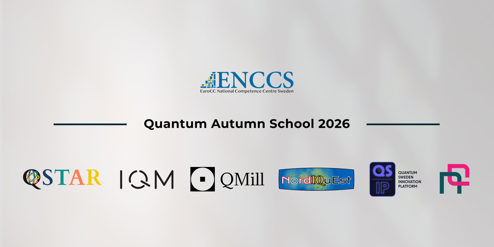
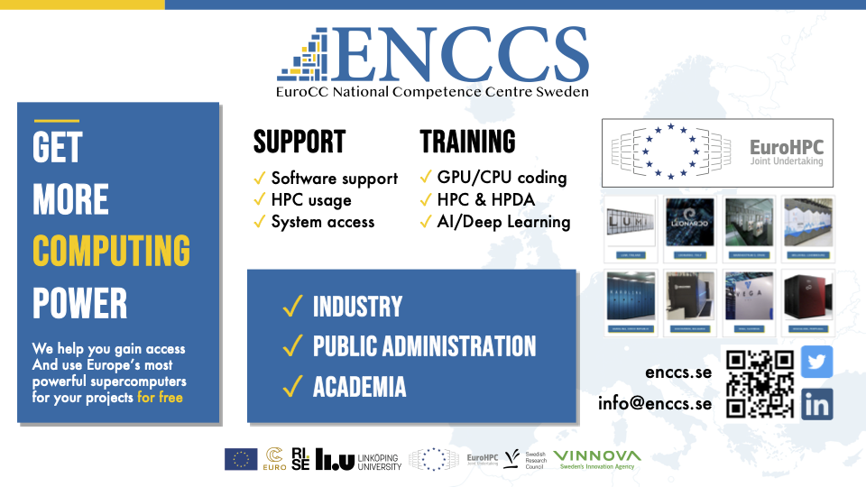

Quantum Autumn School 2026¶
Wellcome to 2026 edition of the Quantum Autumn School! This year we have a couple of differences with respect to previous editions. The first and most important is that the school will be held in-person only.
Important information
Dates: November 2nd to 4th 2026
Place: Stockholm, Sweden. The exact venue will be sent by email to the accepted participants.
In order to do the exercises and practice is important to bring a laptop
Prerequisites
Knowlegde of the Python programming language.
Knowlegde of linear algebra.
Own laptop
A bit of motivation :)
Schedule:¶
Monday 2nd November — Basics¶
Time |
Session / Topic |
|---|---|
09:00 - 09:10 |
Quantum Computing in RISE and Sweden. |
09:10 - 09:20 |
QSTAR |
09:20 - 09:30 |
Nordiquest |
09:30 - 09:40 |
Nordic Quantum |
09:40 - 09:50 |
ENCCS and EuroHPC |
09:50 - 10:00 |
Introduction to the School |
10:00 - 10:10 |
Break |
10:10 - 11:00 |
Introduction to quantum computing I - Basic concepts |
11:00 - 11:10 |
Break |
11:10 - 12:00 |
Introduction to quantum computing II - Hardware implementation |
12:00 - 13:00 |
Lunch |
13:00 - 13:50 |
Introduction to Quantum computing III - Basics on quantum algorithms |
13:50 - 14:00 |
Break |
14:00 - 15:30 |
Building your own quantum computer in Python |
15:30 - 16:30 |
Visit to the KTH fridge to see a quantum computer |
Tuesday 3rd November — Intermediate¶
Time |
Session / Topic |
|---|---|
09:00 - 10:00 |
Introduction to quantum algorithms I - The quantum phase estimation |
10:00 - 10:10 |
Break |
10:10 - 11:00 |
Introduction to quantum algorithms II - Variational quantum algorithms part 1: VQE |
11:00 - 11:10 |
Break |
11:10 - 12:00 |
Introduction to quantum algorithms III - Variational quantum algorithms part 2: QAOA |
12:00 - 13:00 |
Lunch |
13:00 - 13:50 |
Introduction to Quantum Cryptography |
13:50 - 14:00 |
Break |
14:00 - 15:30 |
Practicing on algorithms: Hamiltonian simulation |
15:30 - 16:30 |
Demo on sending encrypted messages with QKD |
Wednesday 4th November — Advanced¶
Time |
Session / Topic |
|---|---|
09:00 - 10:00 |
Applications of Quantum Computing I: Quantum Chemistry |
10:00 - 10:10 |
Break |
10:10 - 11:00 |
Applications of Quantum Computing II: Quantum Machine Learning |
11:00 - 11:10 |
Break |
11:10 - 12:00 |
Applications of Quantum Computing III: Cryptography |
12:00 - 13:00 |
Lunch |
13:00 - 13:50 |
Compression, obfuscation and applications in cryptography. |
13:50 - 14:00 |
Break |
14:00 - 15:30 |
Practicing on applications in a real quantum computer in working groups |
15:30 - 16:30 |
Closing of the school and introduction to the Hackathon. |
Lesson materials¶
The lesson materials for every day in the school will be uploaded here.
Episode template¶
Questions
What syntax is used to make a lesson?
How do you structure a lesson effectively for teaching?
questionsare at the top of a lesson and provide a starting point for what you might learn. It is usually a bulleted list.
Objectives
Show a complete lesson page with all of the most common structures.
…
This is also a holdover from the carpentries-style. It could usually be left off.
The introduction should be a high level overview of what is on the page and why it is interesting.
The lines below (only in the source) will set the default highlighting language for the entire page.
Section¶
A section.
Discussion
Discuss the following.
A discussion section
Another discussion topic
Section¶
print("hello world")
# This uses the default highlighting language
print("hello world)
Exercises: description¶
Exercise Topic-1: imperative description of exercise
Exercise text here.
Solution
Solution text here
Summary¶
A Summary of what you learned and why it might be useful. Maybe a hint of what comes next.
See also¶
Other relevant links
Other link
Keypoints
What the learner should take away
point 2
…
This is another holdover from the carpentries style. This perhaps is better done in a “summary” section.
Useful references¶
We will be using Qrisp as the python library for exercises and the IQM Resonance platform. IQM also provides useful tutorials for learning.
A lot of materials can be found in the webpage of the Quantum Autumn School 2025.
Partners & organizers¶
This school is organized by EuroCC competence centres of Sweden ENCCS in collaboration with QSTAR Center for Quantum Computing and Applications, Linköping University, Nordiquest, IQM, Nordic Quantum, QMill and QSIP.

Registration & logistics¶
Important
Capacity: Maximum 80 people.
Format: In-person only event in Stockholm.
Venue¶
The Quantum Autumn School 2026 will be held in Stockholm, Sweden. Detailed address and directions will be shared via email with registered participants.
Accommodation¶
There are multiple hotels in the vicinity. Below you can find some hotels in order of proximity:
Public transport¶
Download the public transport app to purchase tickets:
Ticket Options:
Single journey ticket
24-hour ticket
72-hour ticket
You can also use your regular credit card by scanning it on the metro and all buses. More information about contactless payments.
From Arlanda Airport:
Take a taxi
Arlanda Express - fast train (20 minutes to T-Centralen)
Flygbussarna - airport bus (approximately 45 minutes to T-Centralen)
About ENCCS¶

The EuroHPC Centre of Excellence in Computing Applications (ENCCS) develops and optimizes computational applications for current and upcoming exascale systems. We provide training, support, and expertise in high-performance computing and emerging technologies like quantum computing.
Let’s stay connected¶
Join our community and stay updated!
Stay in the loop with ENCCS for updates, training opportunities, and news about connecting HPC, AI, and quantum computing!
🌐 Visit our website:
ENCCS Website - HPC services, on-boarding, training courses, webinars, tutorials, blog posts, and upcoming events
📧 Subscribe to our newsletter:
ENCCS Newsletter - Get monthly updates delivered to your inbox
💬 Follow us on social media:
LinkedIn - Latest news, events, and professional updates
YouTube - Tutorials, webinars, and educational content
Stay connected with the European quantum computing community!